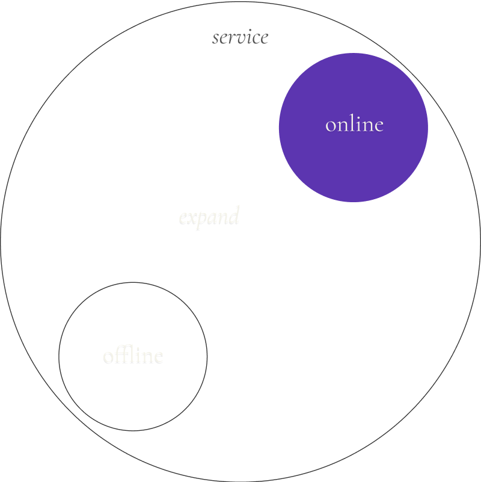
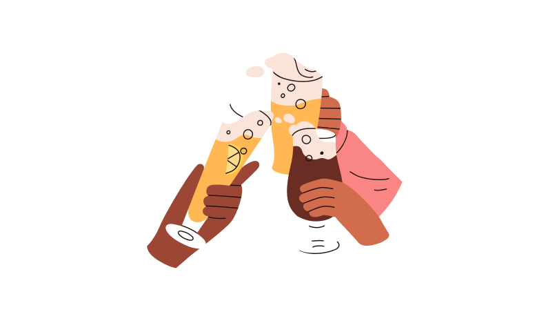
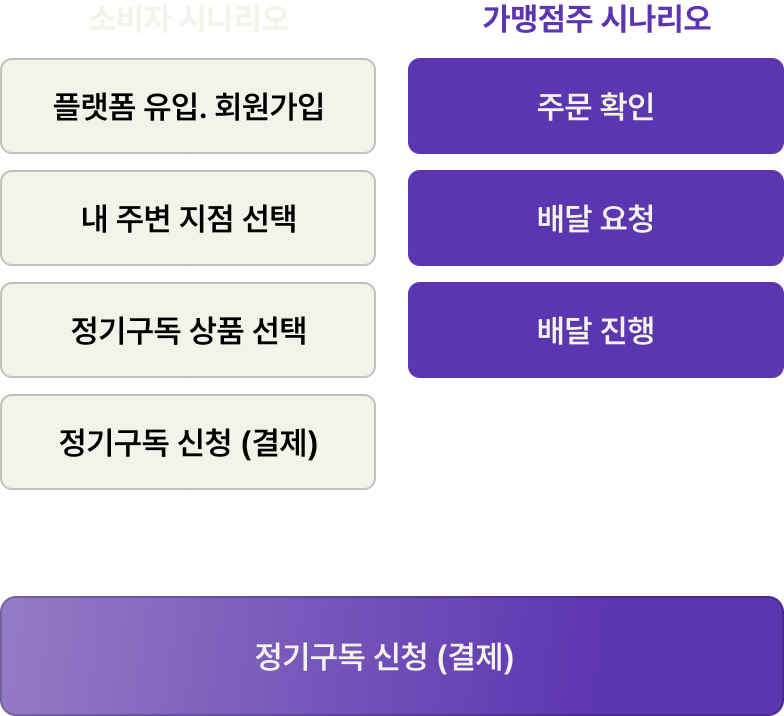
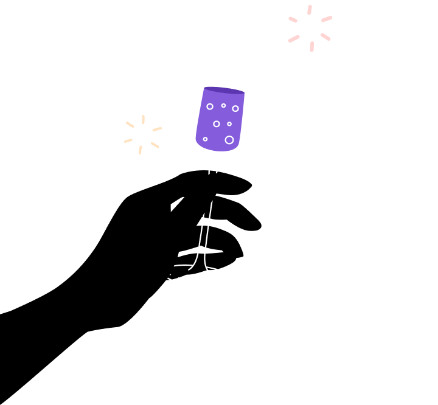
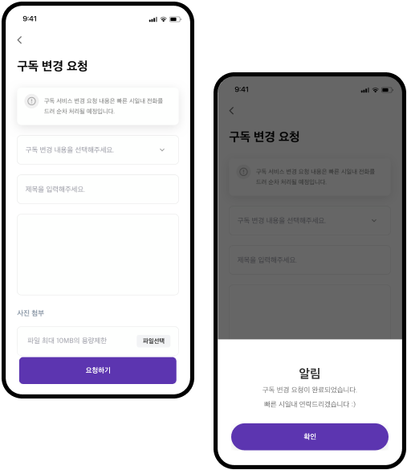

오늘, 와인한잔
uI concept & identity desgin
app
2021
project overview
project
oneul, wine
oneul, wine
UX & Service Planning
photography
Branding Strategy & Design
overview
온-오프라인 와인의 경험을 연결하여 와인 구독과 모임 서비스를
제공하는 오늘,와인한잔 어플리케이션 프로젝트를 진행하였습니다.
이전까지 오프라인 매장을 기반으로 한 소비자와 본사, 가맹점주의
사이클에 맞춰 온라인 정기 구독 및 와인 모임 서비스가 가능하도록
시스템을 구성했습니다.
The business
soultion
soultion
오늘, 와인한잔의 오프라인 매장 경험을
App서비스를 통해 온라인으로 확장.
App서비스를 통해 온라인으로 확장.

as-is
코로나19 상황 속에서
오프라인 식음료
매장 운영의 어려움
오프라인 식음료
매장 운영의 어려움
as-is
오토바이 배달 시
원거리 배달 불가 등
배달 서비스 운영 제약
원거리 배달 불가 등
배달 서비스 운영 제약
as-is
물류센터 구축 및
운영 비용 우려
운영 비용 우려
To-be
와인배달 O2O서비스 구축
증가한 상품 수요에 맞춰
집에서도 와인을 즐길 수 있는
와인배달 서비스를 제공합니다.
집에서도 와인을 즐길 수 있는
와인배달 서비스를 제공합니다.
To-be
빠르고 정확한 배달 서비스 운영
위치 기반 정보를 수집하여
가장 가까운 매장에서
배달이 진행될 수 있도록
시스템을 구축합니다.
가장 가까운 매장에서
배달이 진행될 수 있도록
시스템을 구축합니다.
To-be
서울시내 오프라인 매장을
거점 물류센터로 활용
거점 물류센터로 활용
서울시내 곳곳에 분포한
매장을 거점 물류센터로
활용하여 비용을 절감합니다.
매장을 거점 물류센터로
활용하여 비용을 절감합니다.
main service flow
oneul,wine
service flow

1. Location-based matching system
2. wine management system
3. wine subscription
4. wine Change Subscription
01
가장 가까운 거점
물류센터 매장을 빠르게 연결
물류센터 매장을 빠르게 연결
서울 시내 곳곳의 매장에서 직배송된 신선한 안주와
와인을 정기구독으로 즐길 수 있습니다.
와인을 정기구독으로 즐길 수 있습니다.

와인 구독 과정 1/3
와인 구독 과정 1/3
02
가맹점주 시스템 하나로
더욱 편리한 관리
더욱 편리한 관리
하나의 관리자 페이지를 통해 배송 확인부터 정산까지
가맹점주들이 손쉽게 관리할 수 있도록 구축했습니다.
가맹점주들이 손쉽게 관리할 수 있도록 구축했습니다.

03
와인 콘텐츠와 함께 즐기는
와인 구독 서비스
와인 구독 서비스
하나의 관리자 페이지를 통해 배송 확인부터 정산까지
가맹점주들이 손쉽게 관리할 수 있도록 구축했습니다.
가맹점주들이 손쉽게 관리할 수 있도록 구축했습니다.

03-1
service flow
03-2
빠르고 편리한
와인 구독 변경기능
와인 구독 변경기능
한눈에 보이는 구독옵션 변경기능을 활용하여
서비스 편의성과 사용성을 높였습니다.
서비스 편의성과 사용성을 높였습니다.

onuel, wine
photo
photo
브랜드 이미지를 강화할 수 있도록 촬영을 진행했습니다.


브랜드 아이덴티티를 시각적으로 드러낼 수 있는 이미지가 부족해 리소스
제작이 필요했습니다. 오늘와인한잔만의 분위기와 컬러를 드러낼 수
있도록 포토그래퍼를 파견하여 여러 지점의 매장 전경을 직접
촬영했습니다.